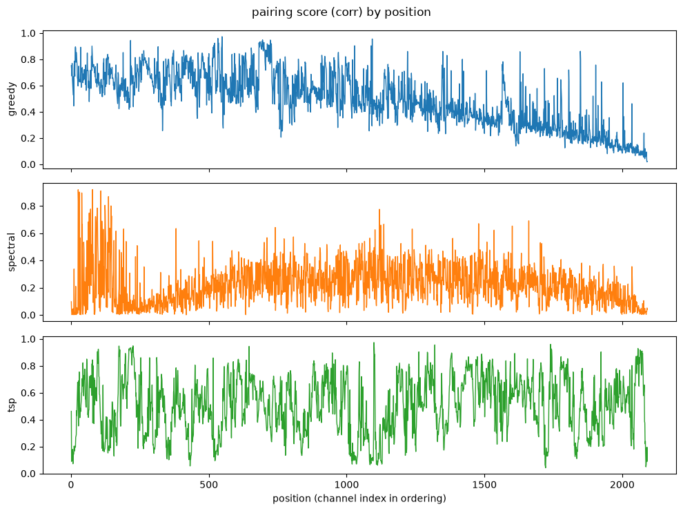
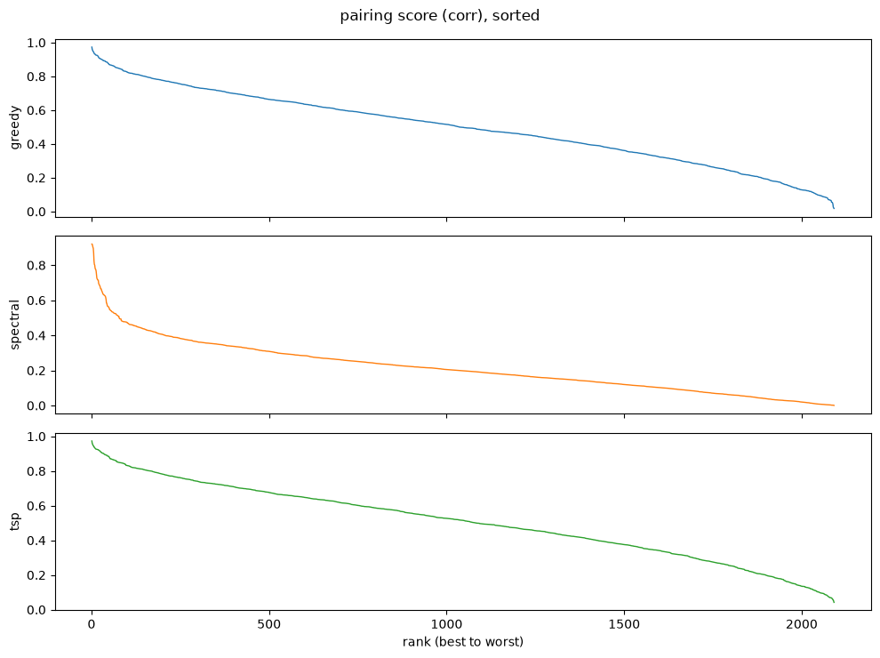
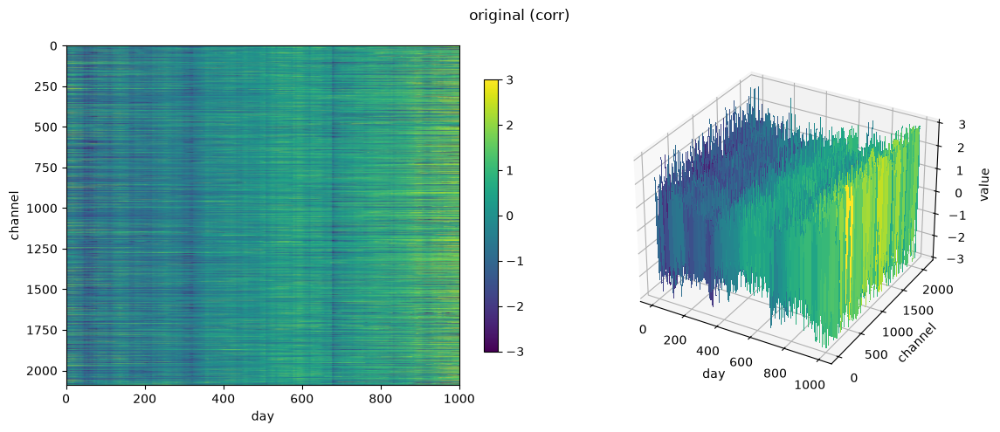
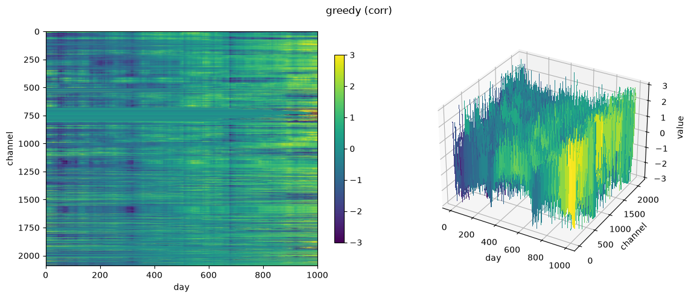
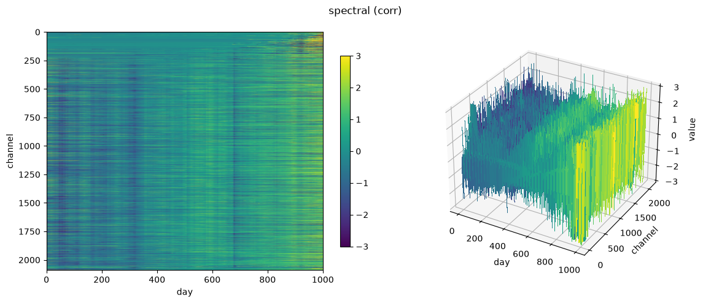
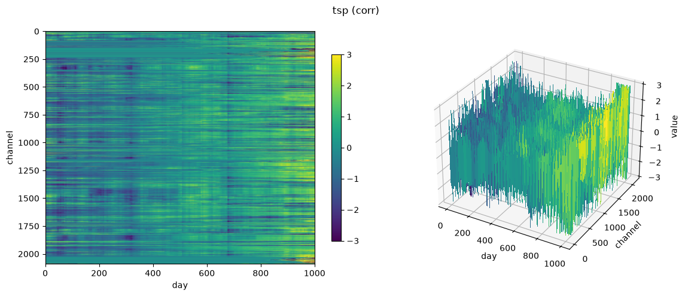
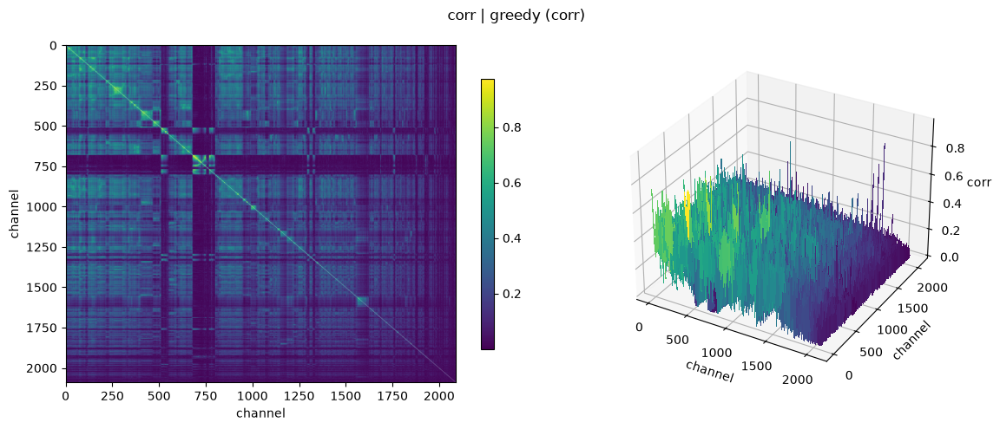
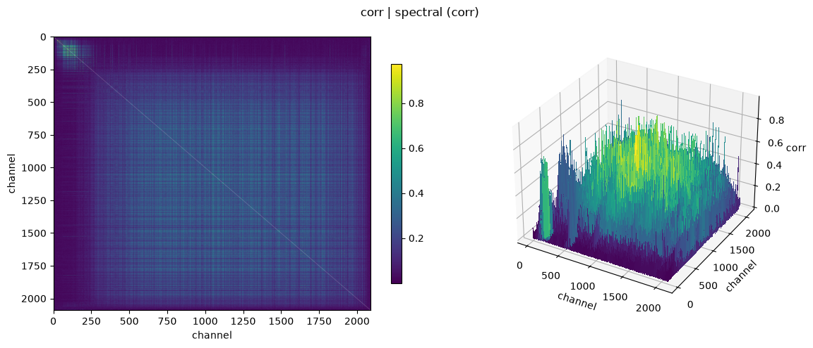
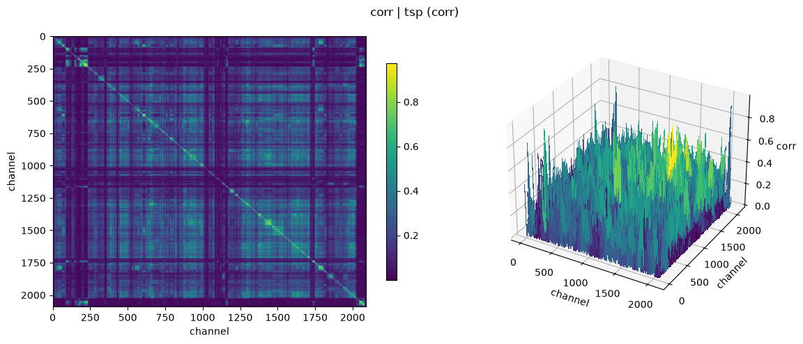

!uv pip install -q yfinance torch pandas numpy matplotlib tqdmdata
Downloading NYSE price data and reordering channels for cross-channel continuity.
import matplotlib
matplotlib.use("Agg")Device
Every function here is device-agnostic – it inherits whatever device its input tensor is already on. So the data is moved once, as it comes off disk (get_nyse_data(..., device=DEVICE)), and the entire pipeline follows it there with no further .to() calls anywhere. Same discipline as whitening: do it once, at the start, then trust it.
Only the plotting functions force .cpu(), at the matplotlib boundary where they have to. The .pt cache files are always written from CPU copies, so they stay loadable on a machine with no GPU.
Measured, warmed up – ~2100 channels x 1003 days, RTX 5090:
| op | CPU | CUDA | |
|---|---|---|---|
corr_to_dist |
7.1 ms | 0.1 ms | 124x |
build_corr |
14.9 ms | 0.8 ms | 20x |
build_xcorr (lag 20) |
458.8 ms | 26.2 ms | 18x |
two_opt |
528.4 ms | 37.6 ms | 14x |
spectral_order |
160.9 ms | 28.4 ms | 5.7x |
build_dist |
64.7 ms | 12.9 ms | 5.0x |
greedy_edge_order |
590.1 ms | 479.6 ms | 1.2x – mostly a serial Python union-find |
greedy_order |
18.0 ms | 18.1 ms | a wash – latency-bound, N sequential syncing argmaxes |
Every op is at least as fast on GPU, so nothing round-trips to CPU; each simply inherits the device of its input.
Warm up before timing anything here. The first CUDA op in a process pays one-time context initialization, which is large enough to completely invert these conclusions: an unwarmed measurement showed build_corr at 156 ms (“slower than CPU!”) and greedy_order at 383 ms (“20x slower!”), both pure startup cost rather than real work.
get_device
def get_device(
prefer:NoneType=None
):cuda -> mps (Apple Silicon) -> cpu, unless prefer overrides.
assert get_device("cpu").type == "cpu"
assert DEVICE.type in ("cuda", "mps", "cpu")
# a tensor moved to DEVICE must actually land there
assert torch.zeros(2, 2).to(DEVICE).device.type == DEVICE.type
print("DEVICE =", DEVICE)DEVICE = cudaDownloading
pandas appears only here, because yfinance hands back DataFrames. Everything downstream is pure torch.
tks = _fetch_nyse_tickers()
assert len(tks) > 0
assert all("$" not in t for t in tks)
assert "^GSPC" not in tks # prepended separately, by get_nyse_data
assert all(t == t.upper() for t in tks)
print(f"{len(tks)} tickers, e.g. {tks[:5]}")2197 tickers, e.g. ['A', 'AA', 'AADX', 'AAMI', 'AAP']get_nyse_data
def get_nyse_data(
cache_dir:str='~/github/shakeqr', years:int=4, chunk_size:int=100, force:bool=False,
device:device=device(type='cpu')
):Daily open/close prices for NYSE common stocks plus the S&P 500 index prepended as channel 0. Returns (opening, closing, tickers) where the price tensors are [channels, days] and tickers is aligned to the channel axis. Cached to two .pt files; skips the download if present.
Tensors land on device immediately – the data goes to the GPU as it comes off disk, and everything downstream simply inherits it. The .pt cache is always written from CPU copies so the files stay portable.
opening, closing, tickers = get_nyse_data()
assert opening.shape == closing.shape
assert opening.shape[0] == len(tickers)
assert "^GSPC" in tickers
assert not torch.isnan(opening).all()
opening.shape, closing.shape, len(tickers)Cache hit -- skipping download. (device=cuda)(torch.Size([2195, 1003]), torch.Size([2195, 1003]), 2195)Cleaning
Two gaps to close before any correlation work:
- Missing days (holidays, halts, late IPOs) show up as
NaN, which poisoncorrcoefand propagate through everything. Filled forward, then backward. - Penny stocks are noise-dominated: a $0.50 stock moving to $0.55 is a 10% “return” that’s mostly bid-ask bounce. $5 is the SEC’s own threshold.
X = torch.tensor([[1., float("nan"), float("nan"), 4., float("nan")]])
filled = _ffill(X)
assert torch.equal(filled, torch.tensor([[1., 1., 1., 4., 4.]]))
# a leading NaN has nothing before it to carry forward -- ffill alone can't fix it
X2 = torch.tensor([[float("nan"), 2., 3.]])
assert torch.isnan(_ffill(X2)[0, 0])
print("ok")okfill_gaps
def fill_gaps(
X
):Forward- then backward-fill NaNs along time. bfill == ffill reversed.
Note: back-filling a ticker that didn’t exist yet paints its pre-IPO period with its first real price – a convenience, not real history.
X = torch.tensor([[float("nan"), 2., float("nan"), float("nan"), 5.]])
filled = fill_gaps(X)
assert torch.equal(filled, torch.tensor([[2., 2., 2., 2., 5.]])) # leading NaN backfilled
# cross-check against pandas ffill().bfill() on random data
torch.manual_seed(0)
Xr = torch.randn(3, 10)
Xr[torch.rand(3, 10) < 0.3] = float("nan")
ref = torch.tensor(pd.DataFrame(Xr.numpy().T).ffill().bfill().to_numpy().T, dtype=torch.float32)
mine = fill_gaps(Xr.clone())
both_nan = torch.isnan(mine) & torch.isnan(ref)
assert torch.allclose(mine[~both_nan], ref[~both_nan])
print("ok")okto_returns
def to_returns(
opening, closing
):[C, T] prices -> [C, T] intraday returns.
op_ = torch.tensor([[100., 50.]])
cl_ = torch.tensor([[110., 45.]])
r = to_returns(op_, cl_)
assert torch.allclose(r, torch.tensor([[0.10, -0.10]]))
print("ok")okprepare
def prepare(
opening, closing, tickers, min_mean_price:float=5.0, min_var:float=1e-12
):Fill gaps, drop penny stocks and zero-variance channels. Returns (prices, returns, tickers), all mutually aligned. An assert at the end catches channel/label drift – otherwise silent, and it’s the wrong company attributed to every channel with no error raised.
# 4 synthetic channels: normal, penny stock (mean price < $5), zero-variance, normal
op = torch.tensor([[100., 101., 102., 103.],
[2., 2.1, 1.9, 2.0],
[50., 50., 50., 50.],
[10., 11., 9., 10.]])
cl = op + torch.tensor([[1., 1., 1., 1.],
[0.1, 0.1, 0.1, 0.1],
[0., 0., 0., 0.],
[0.5, -0.5, 0.5, -0.5]])
tks_ = ["A", "PENNY", "FLAT", "B"]
prices_, returns_, tk_ = prepare(op, cl, tks_)
assert tk_ == ["A", "B"] # PENNY (price) and FLAT (variance) both dropped
assert prices_.shape[0] == 2 and returns_.shape[0] == 2
print("ok:", tk_)ok: ['A', 'B']Orderings
Correlation is computed on returns, not prices. Raw price series are non-stationary – everything trended up over four years, so a price-correlation matrix mostly measures “the market went up” and comes out near rank-1. Differencing removes the trend.
use_abs=True treats strongly anti-correlated channels as similar too, which is arguably right for a fund (a hedge is as informative as a twin) but does change what “adjacent” means.
Two orderings, solving genuinely different problems:
greedy_order– the anchored nearest-neighbour chain: from the S&P, hop to its most-correlated partner, then hop onward from that channel, and so on.spectral_order– Fiedler-vector seriation, a global objective (approximately minimizing \(\sum_{ij} C_{ij}(\pi_i - \pi_j)^2\)) with no anchor.
torch.linalg.eigh returns eigenvalues in ascending order, so evecs[:, 1] is genuinely the Fiedler vector. Unshifted QR iteration converges by descending magnitude, so taking column 1 from that gives the second-largest mode – near noise for a Laplacian. (eigh tridiagonalizes then runs QR internally, so this is still shakeQR under the hood.)
build_corr
def build_corr(
returns, use_abs:bool=True
):[C, T] returns -> [C, C] Pearson correlation at zero lag.
torch.manual_seed(0)
x = torch.randn(50)
noise = torch.randn(50) * 0.01
returns_ = torch.stack([x, x + noise, -x, torch.randn(50)]) # same, same+noise, opposite, independent
C_ = build_corr(returns_, use_abs=True)
assert C_[0, 1] > 0.95 # nearly identical
assert C_[0, 2] > 0.95 # opposite, but abs() treats it as close
assert C_[0, 3] < 0.5 # independent
assert torch.allclose(torch.diag(C_), torch.ones(4), atol=1e-4)
print("ok")okgreedy_order
def greedy_order(
C, start:int=0
):Anchored nearest-neighbour chain. Each step re-anchors on the channel just placed, so start seeds only the first hop.
Inherits C’s device like everything else. This one is latency-bound rather than throughput-bound (N sequential argmaxes, each int() forcing a sync), so it’s the natural candidate for running on CPU instead – but measured at ~2100 channels it’s a wash: 18.0 ms CPU vs 18.1 ms CUDA, and an explicit round-trip to CPU came out slightly worse at 18.8 ms. Not worth the special case.
# hand-built chain structure: 0 closest to 1, then 2, then 3
C_ = torch.tensor([[1.00, 0.90, 0.10, 0.05],
[0.90, 1.00, 0.80, 0.05],
[0.10, 0.80, 1.00, 0.70],
[0.05, 0.05, 0.70, 1.00]])
order = greedy_order(C_, start=0)
assert sorted(order.tolist()) == [0, 1, 2, 3]
assert order.tolist() == [0, 1, 2, 3]
print("ok:", order.tolist())ok: [0, 1, 2, 3]spectral_order
def spectral_order(
C, anchor:int=0
):Fiedler-vector seriation of the graph Laplacian L = D - C.
C_ = torch.tensor([[1.00, 0.90, 0.10, 0.05],
[0.90, 1.00, 0.80, 0.05],
[0.10, 0.80, 1.00, 0.70],
[0.05, 0.05, 0.70, 1.00]])
order = spectral_order(C_, anchor=0)
assert sorted(order.tolist()) == [0, 1, 2, 3]
print("ok:", order.tolist())ok: [0, 1, 2, 3]Lag-aware pairing (cross-correlation)
build_corr measures correlation at a single instant – lag (shift) zero. But two channels can be genuinely related with one leading the other by a few days (one reacts to news first, the other catches up) – zero-lag correlation would score that pair as unrelated even though a real relationship exists at some nonzero shift.
build_xcorr generalizes: for every pair, compute the correlation at every shift tau in [-max_lag, max_lag] and keep the maximum. build_corr is exactly the max_lag=0 special case. The shift is only used to measure this metric – nothing downstream ever actually shifts the data itself; it stays as originally sampled, day-aligned with every other channel.
Small-overlap shifts are discounted, not renormalized away. At large |tau| the overlap window shrinks – naively renormalizing each shift’s score by its own (shrinking) overlap size lets a tiny, noisy window reach a spuriously high score just as easily as a full-length one, and taking the max over ~2000 candidate shifts will reliably find one. Confirmed empirically: on real data, searching the full timeline this way pushed the mean cross-correlation across 2092 channels to 0.978 – not a finding, a multiple-comparisons artifact. The fix: divide every shift’s score by the same fixed T-1 (the full series length) rather than its own shrinking overlap n. At tau=0, n=T-1, so this is exactly the ordinary correlation; at extreme shifts, the numerator only has a few terms to sum but still divides by the full T-1, so the score is automatically discounted toward zero instead of spuriously inflated. Re-checked on the same real data after the fix: full-timeline mean stayed close to the zero-lag baseline, no blowup.
Like build_dist, this expects already-whitened input – whitening happens exactly once, early in the pipeline (returns_w = standardize(returns)), and every downstream function trusts that single pass rather than re-whitening its own input.
This is O((2 max_lag + 1) * C^2 * T) – one matmul-shaped correlation computation per candidate shift, each O(C^2 T). Real cost, which is exactly why it’s plain torch ops rather than a python double-loop over pairs – device defaults to CUDA, falling back to MPS (Apple Silicon), falling back to CPU.
build_xcorr
def build_xcorr(
returns, max_lag:int=20, use_abs:bool=True, device:NoneType=None
):[C, T] returns -> [C, C] matrix of MAXIMUM cross-correlation-like score over shifts tau in [-max_lag, max_lag] (build_corr is the tau=0 special case). max_lag=None searches the entire timeline (tau up to T-1 either direction).
Each shift’s score is divided by the FIXED full series length T-1, not the shrinking per-shift overlap n – at tau=0, n=T-1 so this is exactly the standard correlation; at extreme shifts, the numerator only has a handful of terms to sum but still divides by the full T-1, so the score is naturally discounted toward zero rather than spuriously reaching +-1 on a tiny sample the way per-shift normalization would.
Like build_dist, expects already-whitened input (unit variance, zero mean per channel) – this scaling only behaves like a correlation on whitened data. Whitening happens exactly once, early in the pipeline (returns_w = standardize(returns)); every downstream function, including this one, trusts that single pass rather than re-whitening its own input.
Stays on the input’s device by default (pass device= to force one). It deliberately does NOT copy the result back to CPU – doing so would silently drag the whole downstream pipeline off the GPU.
def _whiten_once_early(X, eps=1e-8):
"""Whiten exactly once, right after data is created -- the same
convention the real pipeline follows (`returns_w = standardize(returns)`),
so every test below feeds build_xcorr what it actually expects."""
return (X - X.mean(dim=1, keepdim=True)) / (X.std(dim=1, keepdim=True) + eps)
# 1. max_lag=0 degenerates exactly to zero-lag correlation
torch.manual_seed(1)
R = _whiten_once_early(torch.randn(6, 50))
assert torch.allclose(build_xcorr(R, max_lag=0, device="cpu"), build_corr(R), atol=1e-4)
# 1b. max_lag=None means "search the whole timeline" -- exactly T-1
assert torch.allclose(build_xcorr(R, max_lag=None, device="cpu"),
build_xcorr(R, max_lag=R.shape[1] - 1, device="cpu"), atol=1e-4)
# 2. the definitive test: detects a lagged relationship zero-lag correlation misses
T = 200
x = torch.randn(T)
y = torch.roll(x, shifts=7)
y[:7] = torch.randn(7) # kill the wraparound so it can't fake the match
R2 = _whiten_once_early(torch.stack([x, y]))
zero_lag = build_corr(R2)[0, 1].item()
too_narrow = build_xcorr(R2, max_lag=2, device="cpu")[0, 1].item()
wide_enough = build_xcorr(R2, max_lag=10, device="cpu")[0, 1].item()
assert zero_lag < 0.3, "zero-lag correlation should look weak for this pair"
assert wide_enough > 0.9, "max cross-correlation should find the near-perfect match once shift=7 is in range"
assert wide_enough > too_narrow + 0.3
print(f"ok: zero-lag={zero_lag:.3f}, max_lag=2 -> {too_narrow:.3f}, max_lag=10 -> {wide_enough:.3f}")
# 3. regression test for the small-overlap blowup this scaling fixes: pure
# independent noise must NOT approach saturation (~1) under a full-timeline
# search, even though naive per-shift normalization would (verified: it
# reached 0.978 MEAN -- not max, mean -- on real data before this fix).
# An absolute ceiling, not a ratio to baseline: taking a max over ~300
# shifts naturally inflates the mean somewhat vs. a single zero-lag sample
# (ordinary extreme-value statistics) -- that alone isn't the bug: what
# the fix actually prevents is the mean approaching the 0.9+ saturation
# the broken version showed.
Rn = _whiten_once_early(torch.randn(30, 150)) # independent channels, no real relationship
baseline = build_corr(Rn).fill_diagonal_(0).mean().item()
full_scan = build_xcorr(Rn, max_lag=None, device="cpu").fill_diagonal_(0)
assert full_scan.mean().item() < 0.5, "full-timeline search should not approach saturation on pure noise"
print(f"ok: noise baseline={baseline:.3f}, full-timeline mean={full_scan.mean().item():.3f} (no blowup)")
# 4. stays on the input's device -- must NOT silently drag results back to CPU,
# which would pull the whole downstream pipeline off the GPU
Rdev = Rn.to(DEVICE)
assert build_xcorr(Rdev, max_lag=3).device.type == DEVICE.type
assert build_corr(Rdev).device.type == DEVICE.type
print(f"ok: device passthrough ({DEVICE.type})")ok: zero-lag=0.227, max_lag=2 -> 0.227, max_lag=10 -> 0.986
ok: noise baseline=0.061, full-timeline mean=0.203 (no blowup)
ok: device passthrough (cuda)corr_to_dist
def corr_to_dist(
C
):Generic correlation -> RMS-distance conversion (on whitened data, d^2 = 2(1-corr)) – works for any [C,C] correlation-like matrix, whether from build_corr (lag 0) or build_xcorr (max over lags).
def _standardize_for_test(X, eps=1e-8):
return (X - X.mean(dim=1, keepdim=True)) / (X.std(dim=1, keepdim=True) + eps)
torch.manual_seed(2)
Rw = _standardize_for_test(torch.randn(8, 300))
C_signed = build_corr(Rw, use_abs=False)
D_from_corr = corr_to_dist(C_signed)
# cross-check against a direct, independent RMS-distance computation
D_direct = torch.cdist(Rw.unsqueeze(0), Rw.unsqueeze(0)).squeeze(0) / (Rw.shape[1] ** 0.5)
assert torch.allclose(D_from_corr, D_direct, atol=0.01)
# device passthrough: must not drag the pipeline back to CPU
assert corr_to_dist(build_corr(Rw.to(DEVICE))).device.type == DEVICE.type
print("ok")okTSP ordering
greedy_order and spectral_order both optimize correlation. But the thing we’re actually measuring (roughness, below) is raw-scale L1 difference between adjacent channels – and those are not the same objective. Two channels can be strongly correlated with wildly different variances, so a correlation-maximizing order can still leave real roughness on the table. This section targets the actual metric directly, and treats “order the channels for minimum adjacent difference” as what it structurally is: an open-path TSP, with distance = expected roughness between each pair.
build_dist gets the [C, C] RMS-distance matrix in O(C^2) via the variance identity E[(X-Y)^2] = Var(X) + Var(Y) - 2 Cov(X,Y) + (mu_X - mu_Y)^2, rather than materializing an O(C^2 T) tensor – computed in float64 since the identity subtracts two similarly-sized terms (cancellation), which is noticeably lossy in float32 for a one-time, cheap O(C^2) op. It’s specifically the zero-lag shortcut; corr_to_dist (above) is the generic version that also works with build_xcorr’s output.
Two-stage solve, both textbook TSP heuristics:
greedy_edge_order– Kruskal-style construction: sort every edge by distance ascending, add it if it doesn’t exceed degree 2 or close a premature cycle. Generally beats nearest-neighbor construction (whatgreedy_orderabove does), since it isn’t locked into decisions made early from an arbitrary start.two_opt– local search refinement: repeatedly reverse a tour segment whenever doing so shortens it, until no improving reversal exists. Uses the standard trick of closing the open path into a cycle through a zero-cost phantom node, so ordinary cyclic 2-opt applies unmodified.
Important: distances must come from whitened returns, not raw ones. Unlike correlation, RMS distance is not scale-invariant – feed it raw returns and a handful of high-variance channels will dominate the tour regardless of genuine co-movement, for the same reason raw-scale roughness can be misleading. Whiten first (standardize, zero mean/unit variance per channel, along time): once Var_i = Var_j = 1 and mu_i = mu_j = 0, the identity above collapses to
\[d_{ij}^2 = 2(1 - \text{corr}_{ij})\]
which is a clarifying fact, not just a formula: on whitened returns, TSP-based ordering solves the exact same underlying objective as greedy_order and spectral_order (closeness = correlation) – it just solves it with a substantially stronger algorithm (greedy-edge construction + 2-opt) than nearest-neighbor construction or a spectral relaxation.
build_dist
def build_dist(
returns
):[C, T] returns -> [C, C] RMS distance between channels. The zero-lag-specific fast path; see corr_to_dist for the generic version.
Uses float64 for the variance identity (it subtracts two similarly-sized terms, so float32 cancellation is measurable) – except on MPS, which has no float64 support at all and would raise; there it falls back to float32 and eats the precision loss.
torch.manual_seed(3)
R = torch.randn(5, 20)
D_ = build_dist(R)
brute = torch.zeros(5, 5)
for i in range(5):
for j in range(5):
brute[i, j] = ((R[i] - R[j]) ** 2).mean().sqrt()
assert torch.allclose(D_, brute, atol=1e-3)
print("ok")okgreedy_edge_order
def greedy_edge_order(
D
):Greedy-edge TSP construction (Kruskal-style union-find).
torch.manual_seed(4)
D_ = torch.rand(10, 10); D_ = (D_ + D_.T) / 2; D_.fill_diagonal_(0)
order = greedy_edge_order(D_)
assert sorted(order.tolist()) == list(range(10))
naive_len = D_[torch.arange(9), torch.arange(1, 10)].sum()
greedy_len = D_[order[:-1], order[1:]].sum()
assert greedy_len <= naive_len + 1e-6
print("ok")oktour_length
def tour_length(
D, order
):Total length of an open-path tour – the quantity 2-opt minimizes.
D_ = torch.tensor([[0., 1., 5.], [1., 0., 2.], [5., 2., 0.]])
order = torch.tensor([0, 1, 2])
assert abs(tour_length(D_, order) - 3.0) < 1e-6 # 0->1 (1) + 1->2 (2)
print("ok")oktwo_opt
def two_opt(
D, order, max_passes:int=30, tol:float=1e-09
):Full vectorized 2-opt on an open path, via the standard trick of closing it into a cycle through a zero-cost phantom node.
# never worsens, stays a valid permutation
torch.manual_seed(5)
D_ = torch.rand(15, 15); D_ = (D_ + D_.T) / 2; D_.fill_diagonal_(0)
order0 = greedy_edge_order(D_)
len0 = tour_length(D_, order0)
order1 = two_opt(D_, order0.clone())
assert sorted(order1.tolist()) == list(range(15))
assert tour_length(D_, order1) <= len0 + 1e-6
# regression test for a real bug hit during development: an unravel-index error
# (dividing by the wrong tensor dimension) silently accepted a non-improving
# move as if none existed. Hand-built case with an obvious improving swap:
D2 = torch.tensor([[0., 1., 9., 9.],
[1., 0., 9., 2.],
[9., 9., 0., 1.],
[9., 2., 1., 0.]])
crossed = torch.tensor([0, 2, 1, 3]) # deliberately bad: edges (0,2)=9, (2,1)=9
fixed = two_opt(D2, crossed.clone())
assert tour_length(D2, fixed) < tour_length(D2, crossed)
print("ok")oktsp_order
def tsp_order(
returns, max_passes:int=30
):Greedy-edge construction + 2-opt refinement, targeting roughness directly rather than correlation. Zero-lag only (uses build_dist); for the cross-correlation metric, build D via corr_to_dist(build_xcorr(...)) and call two_opt(D, greedy_edge_order(D)) directly. Returns (order, D).
torch.manual_seed(6)
R = torch.randn(8, 30)
order, D_ = tsp_order(R)
assert sorted(order.tolist()) == list(range(8))
ge_len = tour_length(D_, greedy_edge_order(D_))
assert tour_length(D_, order) <= ge_len + 1e-6 # refinement shouldn\'t be worse than construction alone
print("ok")okDiagnostics
Judge an ordering by what we actually want from it: smoothness along the channel axis. The mean alone is misleading, though – greedy maximizes local adjacent correlation by construction, so it can win on the mean while being far worse in practice. It burns the good matches early and strands the leftovers, so quality degrades monotonically: excellent for the first stretch, garbage in the tail.
For conv or patch-based representation learning, uniformly-mediocre beats great-then-terrible, since non-stationary channel statistics make learned cross-channel features unreliable. Hence the per-block profile.
roughness must be measured on whitened returns, not raw ones, for the same reason distances need whitened input: on raw returns, a handful of high-variance channels dominate the number regardless of genuine co-movement, so “lower roughness” can just mean “avoided the loud channels” rather than “found real structure.”
roughness
def roughness(
X, order:NoneType=None
):Mean total variation between adjacent channels. Lower = smoother.
X = torch.tensor([[0., 0.], [1., 1.], [3., 3.]])
assert abs(roughness(X) - 1.5) < 1e-6 # |1-0|=1, |3-1|=2 -> mean 1.5
order = torch.tensor([2, 0, 1]) # reorder to 3,0,1 -> |0-3|=3, |1-0|=1 -> mean 2.0
assert abs(roughness(X, order) - 2.0) < 1e-6
print("ok")okroughness_profile
def roughness_profile(
X, order, n_blocks:int=10
):Per-position roughness – reveals non-uniformity that the mean hides.
X = torch.arange(20).float().unsqueeze(1).repeat(1, 3) # 20 channels, constant across "days", values 0..19
prof = roughness_profile(X, torch.arange(20), n_blocks=4)
assert len(prof) == 4
assert all(abs(p - 1.0) < 1e-6 for p in prof) # adjacent channels always differ by exactly 1
print("ok:", prof)ok: [1.0, 1.0, 1.0, 1.0]chain_trace
def chain_trace(
C, order, tickers, n:int=8
):Print the pairs the chain actually maximized, hop by hop.
import io as _io, contextlib
C_ = torch.eye(3) + 0.1
order = torch.tensor([0, 1, 2])
tks_ = ["AAA", "BBB", "CCC"]
buf = _io.StringIO()
with contextlib.redirect_stdout(buf):
chain_trace(C_, order, tks_, n=2)
out = buf.getvalue()
assert "AAA -> BBB" in out and "BBB -> CCC" in out
print("ok")okcorr_stats
def corr_stats(
C, orders
):orders: dict of name -> order tensor.
import io as _io, contextlib
C_ = torch.eye(3) + 0.1
buf = _io.StringIO()
with contextlib.redirect_stdout(buf):
corr_stats(C_, {"test_order": torch.tensor([0, 1, 2])})
out = buf.getvalue()
assert "mean |corr|" in out and "test_order" in out
print("ok")okPlotting
Per-channel standardization is a visualization fix only – correlation is invariant under per-channel affine transforms, so the orderings are unaffected and need no recompute.
Two things that decide whether these plots show anything:
- A contiguous channel slice, not a stride.
[::20]puts channels 20 apart in the ordering next to each other on screen, destroying exactly the local continuity we’re looking for and making every ordering look equally noisy. To see the global picture instead, mean-pool the channel axis – pooling preserves continuity, subsampling discards it. - Clipping. Standardizing equalizes variance but doesn’t remove outliers; one 20-sigma spike eats the whole color range and flattens everything else.
show_corr is the definitive seriation check: a working ordering makes the permuted correlation matrix visibly banded, high near the diagonal.
Rasterized, not interactive. Both show and show_corr render two static matplotlib views side by side – a top-down heatmap (imshow) and a 3D surface (mplot3d) – rather than an embedded-data interactive widget. The tradeoff: no live rotation, but a fixed small output size (tens-hundreds of KB) regardless of channel count, since rasterizing to pixels discards the raw data rather than shipping all of it to the browser. A full show_corr over all ~2100 channels was 91MB as an embedded-data interactive plot; the matplotlib equivalent renders in well under a second either way.
standardize
def standardize(
X, eps:float=1e-08
):Zero mean, unit variance per channel (along time).
X = torch.tensor([[1., 2., 3., 4., 5.]])
Xs = standardize(X)
assert abs(Xs.mean().item()) < 1e-6
assert abs(Xs.std(unbiased=True).item() - 1.0) < 1e-4
print("ok")oklog_prices
def log_prices(
prices
):Standardized log-prices. clamp_min guards against a stray zero or negative price, which would give -inf and NaN out the whole channel.
prices_ = torch.tensor([[1., 2., 4., 8.]])
lp = log_prices(prices_)
assert not torch.isnan(lp).any()
bad_prices = torch.tensor([[0., 1., -5., 2.]]) # zero and negative -- would be -inf/NaN unguarded
assert torch.isfinite(log_prices(bad_prices)).all()
print("ok")okimport matplotlib.pyplot as plt
x = np.arange(5); y = np.arange(4)
Z = np.random.randn(4, 5)
fig = _two_panel(x, y, Z, "test", "x", "y", "z")
assert isinstance(fig, plt.Figure)
print("ok")okshow
def show(
X, title, n_ch:NoneType=None, t_stride:int=5, clip:float=3.0, cmap:str='viridis'
):Two static views over ALL channels by default (n_ch=None); x is in real days. t_stride controls point density on the day axis.
import matplotlib.pyplot as plt
X = torch.randn(6, 30)
fig = show(X, "test")
assert isinstance(fig, plt.Figure)
print("ok")okshow_corr
def show_corr(
C, order, title, n:NoneType=None, cmap:str='viridis'
):Correlation matrix permuted by order – banded means it worked. ALL channels by default (n=None). Diagonal (self-correlation, always exactly 1) is masked to NaN – it’s trivial and dominates the color/ height scale otherwise; NaN reads as “excluded,” not as a real value the way 0 would.
import matplotlib.pyplot as plt
C_ = torch.rand(6, 6); C_ = (C_ + C_.T) / 2; C_.fill_diagonal_(1.0)
order = torch.arange(6)
fig = show_corr(C_, order, "test")
assert isinstance(fig, plt.Figure)
print("ok")okPer-position score profile
corr_stats already computes C[o[:-1], o[1:]] – the score between each channel and its immediate predecessor in a given ordering – but only reports block averages. Plotted at full per-position resolution instead, this is the direct picture of “what did each ordering actually pay to place channel k here.”
Channel 0 has no predecessor, so the line starts at position 1. For greedy, which explicitly maximizes this exact score at every step, expect a decline as the best candidates get used up first – worth checking whether it’s a gentle slope or a genuine cliff, since a cliff would mark a natural cutoff for truncating the ordering rather than keeping the whole tail of forced, low-quality pairings.
show_score_profile
def show_score_profile(
C, orders, title:str='pairing score by position', sort_desc:bool=False
):Stacked subplots, one row per ordering, of C[o[:-1], o[1:]] (score vs. immediate predecessor). Default: plotted in positional order (as encountered walking the ordering) – shows where quality holds up or collapses. sort_desc=True instead sorts each ordering’s own scores independently from highest to lowest – most-correlated-left, least-correlated-right – decoupled from position, useful for a clean side-by-side of how gently or sharply each method’s quality decays overall. orders: dict of name -> order tensor, same convention as corr_stats. Each row gets its own color from the standard cycle (each Axes otherwise resets to color 0 independently, so every row would default to the same blue).
import matplotlib.pyplot as plt
# hand-built: score should be exactly the chain\'s known adjacent values
C_ = torch.tensor([[1.00, 0.90, 0.10, 0.05],
[0.90, 1.00, 0.80, 0.05],
[0.10, 0.80, 1.00, 0.70],
[0.05, 0.05, 0.70, 1.00]])
order = torch.tensor([0, 1, 2, 3])
fig = show_score_profile(C_, {"chain": order})
assert isinstance(fig, plt.Figure)
assert len(fig.axes) == 1 # one row per ordering
line = fig.axes[0].lines[0]
assert list(line.get_xdata()) == [1, 2, 3] # positions 1..N-1, channel 0 excluded
assert torch.allclose(torch.tensor(line.get_ydata()), torch.tensor([0.90, 0.80, 0.70]), atol=1e-4)
fig2 = show_score_profile(C_, {"a": order, "b": order.flip(0)})
assert len(fig2.axes) == 2 # two orderings -> two rows
color_a = fig2.axes[0].lines[0].get_color()
color_b = fig2.axes[1].lines[0].get_color()
assert color_a != color_b # each row its own color, not all default blue
# sort_desc=True: same multiset of values, just monotonically non-increasing
fig3 = show_score_profile(C_, {"chain": order}, sort_desc=True)
sorted_line = fig3.axes[0].lines[0].get_ydata()
assert all(sorted_line[i] >= sorted_line[i + 1] for i in range(len(sorted_line) - 1)) # non-increasing
assert torch.allclose(torch.tensor(sorted(sorted_line, reverse=True)),
torch.tensor(sorted([0.90, 0.80, 0.70], reverse=True)), atol=1e-4)
print("ok")okPipeline
One plot per cell – boopiter renders a cell’s final value, not a stream of display() calls.
PAIRING is the switch requested: "corr" (zero-lag) or "xcorr" (max over shifts). It controls the [C, C] similarity matrix that everything below it consumes – greedy_order, spectral_order, and the TSP distance (via corr_to_dist) all just take whatever C this produces, agnostic to which metric built it.
PAIRING = "corr" # "corr" (zero-lag) or "xcorr" (max cross-correlation over shifts)
XCORR_MAX_LAG = 20 # only used when PAIRING == "xcorr"; None = search the entire timelineprices, returns, tk = prepare(opening, closing, tickers)
# already on DEVICE (get_nyse_data put it there); just whiten, once
returns_w = standardize(returns)
if PAIRING == "corr":
C = build_corr(returns_w)
elif PAIRING == "xcorr":
C = build_xcorr(returns_w, max_lag=XCORR_MAX_LAG)
else:
raise ValueError(f"PAIRING must be 'corr' or 'xcorr', got {PAIRING!r}")
D = corr_to_dist(C)
order_g = greedy_order(C, start=0)
order_s = spectral_order(C, anchor=0)
order_t = two_opt(D, greedy_edge_order(D))
print(f"PAIRING={PAIRING!r}, {len(tk)} channels, {prices.shape[1]} days, device={C.device}\n")
corr_stats(C, {"greedy": order_g, "spectral": order_s, "tsp": order_t})PAIRING='corr', 2092 channels, 1003 days, device=cuda:0
mean |corr|: 0.168
max off-diagonal: 0.973
S&P best match: 0.752 (first hop only)
greedy adjacent corr -- mean 0.496, first10 0.639, last10 0.057
spectral adjacent corr -- mean 0.217, first10 0.026, last10 0.027
tsp adjacent corr -- mean 0.506, first10 0.161, last10 0.167chain_trace(C, order_g, tk)ch 0 -> 1: 0.752 A -> WAT
ch 1 -> 2: 0.721 WAT -> MTD
ch 2 -> 3: 0.672 MTD -> TMO
ch 3 -> 4: 0.769 TMO -> DHR
ch 4 -> 5: 0.651 DHR -> RVTY
ch 5 -> 6: 0.613 RVTY -> BIO
ch 6 -> 7: 0.568 BIO -> AVTR
ch 7 -> 8: 0.528 AVTR -> IQVprint(f"original: {roughness(returns_w):.5f}")
for name, o in [("greedy", order_g), ("spectral", order_s), ("tsp", order_t)]:
prof = [f"{v:.4f}" for v in roughness_profile(returns_w, o)]
print(f"{name:9s} {roughness(returns_w, o):.5f} profile: {prof}")original: 0.92685
greedy 0.70633 profile: ['0.5971', '0.5875', '0.6610', '0.5862', '0.6672', '0.7283', '0.7681', '0.8205', '0.8246', '0.8234']
spectral 0.91061 profile: ['0.7927', '0.9834', '0.9400', '0.9024', '0.8987', '0.8914', '0.9063', '0.9068', '0.9376', '0.9476']
tsp 0.69495 profile: ['0.6602', '0.7365', '0.7328', '0.7102', '0.7015', '0.7565', '0.6427', '0.6388', '0.7293', '0.6412']tsp targets roughness directly (rather than correlation as a proxy for it), so it’s the one to expect winning on that number – worth checking it actually does before trusting it over the other two.
Before the surface plots – a cheap, fine-grained look at the same claim. greedy’s score is exactly what it maximized at each step, so its row is the direct picture of “burns the best matches early.” spectral and tsp didn’t literally pick channels by this criterion step-by-step, but the same score at their final positions is still the natural, comparable measure of “how good was this neighbor” – worth reading as a foreshadowing of what the surface plots below should show, not just a confirmation after the fact.
show_score_profile(C, {'greedy': order_g, 'spectral': order_s, 'tsp': order_t}, title=f"pairing score ({PAIRING}) by position")
Same scores, sorted independently within each row (most-correlated-left, least-correlated-right) rather than left in positional order – decouples “how good is this method overall” from “where in the sequence does it hold up,” which the plot above already answers.
show_score_profile(C, {'greedy': order_g, 'spectral': order_s, 'tsp': order_t}, title=f"pairing score ({PAIRING}), sorted", sort_desc=True)
Zl = log_prices(prices) # already on DEVICE; `show` moves to CPU at the matplotlib edge
show(Zl, f'original ({PAIRING})')
show(Zl[order_g], f'greedy ({PAIRING})')
show(Zl[order_s], f'spectral ({PAIRING})')
show(Zl[order_t], f'tsp ({PAIRING})')
show_corr(C, order_g, f'corr | greedy ({PAIRING})')
show_corr(C, order_s, f'corr | spectral ({PAIRING})')
show_corr(C, order_t, f'corr | tsp ({PAIRING})')
Benchmark: which pairing + which algorithm?
Everything above is a single pass over the full window – fine for seeing what each method does, but one number from one window isn’t enough to choose between methods whose scores differ by a few percent. This section resamples: many random time windows, all 6 combinations (2 pairings x 3 algorithms) evaluated on each, accumulated until a preference is clear.
Train/validation split. Each trial fits the ordering on one time window and scores it on a disjoint one. This matters more than it might seem: tsp optimizes the distance matrix that roughness is derived from, so scoring on the same window it fit would make tsp win semi-tautologically – it would be grading its own objective. The held-out score instead asks the question we actually care about: does this ordering capture channel structure that persists into a period it never saw? That’s what determines whether an ordering is worth reusing going forward. In-sample is reported alongside it, both because it’s cheap (fitting dominates; evaluating a second window is nearly free) and because a large in-sample/held-out gap is itself the signal that a method is overfitting the window rather than finding real structure.
Weighting by window length, as requested – longer fit windows give more reliable correlation estimates, so they carry more weight in the mean.
Run over many crops, this is repeated random subsampling cross-validation (Monte Carlo CV) – splits drawn at random each trial, rather than partitioned into fixed non-overlapping folds the way k-fold does. Because all 6 combos are scored on the identical split every trial, the comparison is paired, which is what makes differences of a few percent detectable at all.
Two summary statistics, because they answer different questions and can disagree:
- Weighted mean roughness – absolute quality, but comparable across trials only to the extent that different windows are equally “hard.”
- Win rate – how often a combo had the lowest roughness within a trial. Since all 6 combos see the identical window every trial, this is a paired, rank-based comparison, immune to some windows simply being noisier than others. This is usually the more trustworthy of the two.
assert set(ALGOS) == {"greedy", "spectral", "tsp"}
assert PAIRINGS == ["corr", "xcorr"]
# each entry must be callable with the (C, D) signature the trial loop uses
C_ = torch.tensor([[1.0, 0.9, 0.1], [0.9, 1.0, 0.8], [0.1, 0.8, 1.0]])
D_ = corr_to_dist(C_)
for name, fn in ALGOS.items():
o = fn(C_, D_)
assert sorted(o.tolist()) == [0, 1, 2], f"{name} did not return a valid permutation"
print("ok")oksample_fit_eval
def sample_fit_eval(
T, min_len, max_len, rng, min_eval:int=60
):Pick a random contiguous fit window, plus a DISJOINT eval window taken from whatever timeline remains on either side. Returns ((fit_start, fit_end), (eval_start, eval_end) or None).
import numpy as np
rng_ = np.random.default_rng(0)
for _ in range(200):
fit, ev = sample_fit_eval(1000, 100, 500, rng_)
assert 100 <= fit[1] - fit[0] <= 500
assert 0 <= fit[0] < fit[1] <= 1000
if ev is not None:
# the whole point: fit and eval must not overlap
assert ev[1] <= fit[0] or ev[0] >= fit[1], f"overlap! fit={fit} eval={ev}"
assert 0 <= ev[0] < ev[1] <= 1000
print("ok")okrun_trial
def run_trial(
returns, rng, min_len:int=120, max_len:NoneType=None, xcorr_max_lag:int=20, min_var:float=1e-12
):One trial: crop a fit window, build all 6 (pairing, algo) orderings on it, and score each by roughness both in-sample and on a disjoint window. Channels degenerate within this window are dropped – the same channel set is used for every combo, so the comparison stays paired.
import numpy as np
torch.manual_seed(0)
R_ = torch.randn(12, 400)
res_ = run_trial(R_, np.random.default_rng(1), min_len=80, max_len=200, xcorr_max_lag=3)
meta_ = res_.pop("_meta")
assert 80 <= meta_["fit_len"] <= 200
assert set(res_.keys()) == {(p, a) for p in PAIRINGS for a in ALGOS} # all 6 combos present
for k, v in res_.items():
assert v["in_sample"] > 0, f"{k} in_sample should be positive"
assert not np.isnan(v["in_sample"])
print("ok:", meta_)ok: {'fit_len': 137, 'eval_len': 128, 'n_channels': 12}run_benchmark
def run_benchmark(
returns, n_trials:int=20, results:NoneType=None, seed:NoneType=None, min_len:int=120, max_len:NoneType=None,
xcorr_max_lag:int=20, progress:bool=True
):Run n_trials independent trials, appending to results so the benchmark is resumable – call it again with the same list to keep accumulating rather than starting over.
torch.manual_seed(0)
R_ = torch.randn(10, 300)
res_ = run_benchmark(R_, n_trials=2, seed=0, min_len=80, max_len=150,
xcorr_max_lag=2, progress=False)
assert len(res_) == 2
res_ = run_benchmark(R_, n_trials=3, results=res_, seed=1, min_len=80, max_len=150,
xcorr_max_lag=2, progress=False)
assert len(res_) == 5, "should APPEND to existing results, not restart"
print("ok")oksummarize_benchmark
def summarize_benchmark(
results, metric:str='held_out', verbose:bool=True
):Weighted-mean roughness (weight = fit-window length) and win rate per combo, ranked best-first. Returns a list of dicts.
# hand-built results: "b" is unambiguously better on every trial
fake = [
{("corr", "greedy"): {"in_sample": 0.5, "held_out": 0.5},
("corr", "tsp"): {"in_sample": 0.2, "held_out": 0.2},
"_meta": {"fit_len": 100, "eval_len": 50, "n_channels": 10}},
{("corr", "greedy"): {"in_sample": 0.6, "held_out": 0.6},
("corr", "tsp"): {"in_sample": 0.3, "held_out": 0.3},
"_meta": {"fit_len": 200, "eval_len": 50, "n_channels": 10}},
]
rows = summarize_benchmark(fake, verbose=False)
assert rows[0]["algo"] == "tsp" # ranked best-first
assert rows[0]["win_rate"] == 1.0 # won every trial
assert rows[1]["win_rate"] == 0.0
# weighted mean: (0.2*100 + 0.3*200)/300 = 0.2667, NOT the unweighted 0.25
assert abs(rows[0]["mean"] - (0.2 * 100 + 0.3 * 200) / 300) < 1e-9
print("ok")okRun it
run_benchmark appends to whatever list you pass, so this is resumable: run a small batch, look, then keep going. Each trial takes roughly 3 seconds (all 6 combos, ~2000 channels), so ~100 trials is around 5 minutes.
Read held_out to decide what to actually use going forward; compare it against in_sample to see which methods are overfitting their fit window.
bench_results = run_benchmark(returns, n_trials=25, seed=0) # returns is already on DEVICE
len(bench_results)benchmark trials: 100%|███████████████████████████████████████████████████████████████| 25/25 [00:39<00:00, 1.59s/it]25_ = summarize_benchmark(bench_results, metric="held_out")
print()
_ = summarize_benchmark(bench_results, metric="in_sample")metric='held_out', 25 trials (lower roughness = better)
pairing algo weighted mean +/- se win rate
corr tsp 0.77043 0.00747 80.0%
xcorr tsp 0.77113 0.00752 20.0%
corr greedy 0.77842 0.00759 0.0%
xcorr greedy 0.77971 0.00765 0.0%
xcorr spectral 0.96211 0.01216 0.0%
corr spectral 0.96586 0.01140 0.0%
best: corr/tsp (gap to runner-up 0.00071, ~0.1 se) -> NOT yet separated -- run more trials
metric='in_sample', 25 trials (lower roughness = better)
pairing algo weighted mean +/- se win rate
corr tsp 0.70807 0.00383 100.0%
xcorr tsp 0.71512 0.00393 0.0%
corr greedy 0.71607 0.00370 0.0%
xcorr greedy 0.72265 0.00380 0.0%
xcorr spectral 0.91566 0.00391 0.0%
corr spectral 0.91718 0.00391 0.0%
best: corr/tsp (gap to runner-up 0.00705, ~1.3 se) -> NOT yet separated -- run more trialsNot separated yet? Re-run the cell below as many times as you like – it keeps appending to bench_results, so the estimate tightens with every batch.
bench_results = run_benchmark(returns, n_trials=25, results=bench_results)
_ = summarize_benchmark(bench_results, metric="held_out")benchmark trials: 100%|███████████████████████████████████████████████████████████████| 25/25 [00:39<00:00, 1.60s/it]metric='held_out', 50 trials (lower roughness = better)
pairing algo weighted mean +/- se win rate
corr tsp 0.75884 0.00616 84.0%
xcorr tsp 0.75983 0.00617 16.0%
corr greedy 0.76671 0.00627 0.0%
xcorr greedy 0.76779 0.00636 0.0%
xcorr spectral 0.94311 0.00945 0.0%
corr spectral 0.94891 0.00862 0.0%
best: corr/tsp (gap to runner-up 0.00099, ~0.1 se) -> NOT yet separated -- run more trials